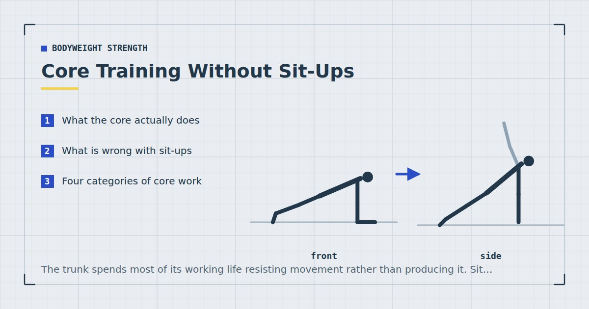

Bodyweight Strength
Core Training Without Sit-Ups: 10 Better Options
The trunk spends most of its working life resisting movement rather than producing it. Sit-ups train the opposite, which is why they are a narrow answer to a broad question.

The core is not a muscle. It is a loose collective term for the muscles around the trunk — the rectus abdominis, obliques, transverse abdominis, and the spinal erectors — which work together mostly to keep the spine stable while the limbs do things.
That last part is the important bit, and it is where sit-ups and core training part company.
What the core actually does
Think about what your trunk is doing when you carry shopping in one hand, push a heavy door, stand up from a chair, or hold a plank position at the bottom of a push-up. In every case the job is to resist movement — resist bending sideways, resist rotating, resist the lower back arching.
Very little of ordinary life or ordinary training asks the trunk to repeatedly flex the spine forward against resistance, which is what a sit-up trains.
What is wrong with sit-ups
Two things, and the first is more important than the second.
They train a narrow function. Repeated spinal flexion is one thing the trunk can do, and not the thing it mostly does. A programme built on sit-ups leaves the anti-rotation and anti-extension functions largely untrained.
They load the spine in flexion, repeatedly. This is where the discussion often overheats. Sit-ups are not dangerous for most healthy people, and claiming they are is an overstatement. But repeated loaded flexion is a position some people with existing back problems tolerate poorly, and given that better options exist, there is little reason to insist on them.
If you enjoy sit-ups and they cause you no trouble, they are not going to hurt you. They are simply not the most useful use of your core training time.
Four categories of core work
A complete core programme covers four functions:
- Anti-extension — resisting the lower back arching. Planks, dead bugs, hollow holds.
- Anti-rotation — resisting twisting. Shoulder taps, bird dogs, Pallof-style band holds.
- Anti-lateral-flexion — resisting bending sideways. Side planks, suitcase carries.
- Hip flexion under control — leg lowering variations. The one category where controlled movement is the point.
Most home core routines cover the first and ignore the other three.
The ten exercises
Anti-extension
1. Dead bug. On your back, arms up, knees at ninety degrees. Lower opposite arm and leg while keeping the lower back pressed flat. The moment the back lifts, you have gone too far — shorten the range.
2. Plank. Forearms and toes, body in one line, glutes squeezed. Quality over duration — thirty good seconds beats two minutes of sagging. The staged version is in the plank progression chart.
3. Hollow hold. On your back, lower back pressed down, arms and legs extended and lifted. The harder cousin of the dead bug. Bend the knees to scale it.
4. Ab wheel rollout, if you own one. The hardest anti-extension exercise most people can access — see the ab wheel progression.
Anti-rotation
5. Plank shoulder tap. From a push-up position with feet wide, tap one shoulder with the opposite hand. The goal is to stop the hips rotating, not to tap quickly.
6. Bird dog. On hands and knees, extend opposite arm and leg, hold for two seconds. Deceptively demanding when done slowly.
7. Band anti-rotation hold. Hold a band anchored at chest height out in front of you, standing side-on, and resist the pull. Requires a band — see the resistance bands guide.
Anti-lateral-flexion
8. Side plank. Forearm and feet, hips lifted, body in one line viewed from the front. Drop to the knees to scale.
9. Suitcase carry. Carry something heavy in one hand and walk, keeping your torso vertical. A shopping bag, a water container, a suitcase. Unglamorous and highly effective.
Controlled hip flexion
10. Leg lowering. On your back, legs vertical, lower them slowly toward the floor while keeping the lower back flat. Stop where the back starts to lift and raise them again.
If the exercise looks like nothing much is happening, it is probably training the thing the trunk actually does.
Putting them together
Pick one exercise from each category and do two or three sets, two or three times a week. Five to ten minutes at the end of a session is enough.
A sensible default: dead bug, plank shoulder tap, side plank, leg lowering. Rotate to different options within each category every six weeks or so.
For holds, work in the range of twenty to forty-five seconds with good quality rather than chasing long durations. For repetitions, eight to fifteen per side, slow and controlled.
Core work goes at the end of a session, not the start — a fatigued trunk compromises every other exercise, as covered in how to structure a home workout.
A note on visible abs
Worth saying plainly because it is the unspoken goal behind most core training. Whether abdominal muscles are visible is determined overwhelmingly by body fat, not by how much core work you do. You cannot reduce fat from a specific area by training the muscle underneath it — spot reduction does not work, and the evidence on that has been consistent for a long time.
Core training makes the muscles larger and stronger, which changes how they look once body fat is low enough for them to be visible. Getting to that point is a dietary matter, and the honest framing of it is in the realistic weight-loss plan.
What the evidence supports, and what it does not
Core training attracts more confident claims than most areas of exercise, so it is worth separating what is reasonably established from what is repeated because it sounds right.
Reasonably established: the trunk muscles respond to resistance training like any other muscle group, following the same relationship between weekly training volume and adaptation.2 They also respond to proximity to failure rather than to load specifically, which is why bodyweight core work is effective despite the light resistance.3 Adult activity guidance asks for strengthening work covering all major muscle groups, and the trunk qualifies.1
Not established, despite frequent claims: that core training prevents back pain, that a strong core corrects posture, or that any particular exercise "activates the deep core" in a way others do not. These may contain some truth, but the evidence is considerably weaker than the confidence with which they are usually asserted, and I would rather say so than repeat them.
Clearly false: that core exercises reduce abdominal fat. Spot reduction does not work, and no amount of trunk training changes where the body draws fat from.
Core exercises are frequently recommended for back pain, and sometimes they help. But back pain has many causes, and the right exercises depend on which one applies to you. If you have persistent or recurring back pain, see a physiotherapist or your doctor rather than self-prescribing from an article. Stop any exercise here that reproduces your pain.
Where to go next
For a staged plank programme, see the plank progression chart. For where core work sits in a full week, use the three-day split.
Frequently asked questions
Are sit-ups bad for you?
Not for most healthy people, and claiming otherwise overstates the evidence. The stronger objection is that they train a narrow function — repeated spinal flexion — while the trunk mostly works to resist movement. Better options exist, so there is little reason to build a programme on them.
What is the best core exercise without sit-ups?
There is no single best one, because the core has four distinct functions. A complete programme includes anti-extension work such as dead bugs, anti-rotation work such as plank shoulder taps, anti-lateral-flexion work such as side planks, and controlled leg lowering.
How often should I train my core?
Two or three times a week, five to ten minutes at the end of a session. The trunk is also working during squats, push-ups and rows, so it needs less dedicated volume than people assume.
Will core exercises give me a flat stomach?
Not directly. Whether abdominal muscles are visible is determined overwhelmingly by body fat levels, and you cannot reduce fat from a specific area by training the muscle underneath it. Core work builds the muscle; diet determines whether you can see it.
How long should I hold a plank?
Twenty to forty-five seconds with genuinely good position beats two minutes of sagging. Once you can hold a good plank for about a minute, move to a harder variation rather than adding time.
Sources and further reading
- NHS. Strength and Flex exercise plan.
- Schoenfeld BJ, Ogborn D, Krieger JW. “Dose-response relationship between weekly resistance training volume and increases in muscle mass: A systematic review and meta-analysis.” Journal of Sports Sciences, 2017;35(11):1073–1082. PubMed.
- Schoenfeld BJ, Grgic J, Ogborn D, Krieger JW. “Strength and Hypertrophy Adaptations Between Low- vs. High-Load Resistance Training: A Systematic Review and Meta-analysis.” Journal of Strength and Conditioning Research, 2017;31(12):3508–3523. PubMed.
- World Health Organization. WHO Guidelines on Physical Activity and Sedentary Behaviour. 2020.
- MedlinePlus, U.S. National Library of Medicine. Exercise and Physical Fitness.
Comments
Comments are not enabled yet. Add a hosted comment embed (Disqus, Commento, Giscus) inside this container when you are ready.